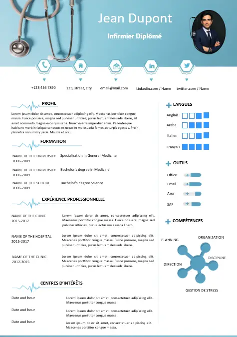

CV Infirmier
Un superbe CV Infirmier/Infirmière 100% éditable et Gratuit

Description détaillée du CV
Ce CV Infirmier gratuit au format Word est parfait pour présenter vos compétences et expériences de manière professionnelle et attrayante. Voici ses principales caractéristiques :
- Design Professionnel : Un design moderne et épuré avec des couleurs sobres et des polices de caractères lisibles.
- Facilement Éditable : Compatible avec Microsoft Word, ce CV est simple à modifier : personnalisez le texte, les couleurs et les sections.
- Sections Claires et Structurées : Inclut des sections pour les informations personnelles, le profil professionnel, l’expérience professionnelle, les compétences, la formation et les certifications.
- Mise en Page Optimisée : Une mise en page qui assure une présentation visuelle agréable et une lecture facile.
- Adapté aux Professionnels de Santé : Conçu pour mettre en avant les compétences cliniques et les expériences en milieu hospitalier.
Exemple de Contenu pour le CV :
Profil Professionnel : Infirmière diplômée avec plus de 5 ans d'expérience en soins aux patients et gestion des dossiers médicaux. Compétente en communication et coordination avec les équipes médicales.
Expérience Professionnelle :
- Infirmière en Chirurgie Générale | Hôpital Saint-Martin | 2018 - Présent
Soins préopératoires et postopératoires, administration de médicaments, surveillance des signes vitaux. - Infirmière en Médecine Interne | Clinique du Parc | 2015 - 2018
Soins aux patients atteints de maladies chroniques, éducation des patients et des familles.
Compétences : Soins aux patients, administration de médicaments, gestion des urgences, communication interpersonnelle.
Formation : Diplôme d'État d'Infirmier | Université de Santé | 2015
Certifications : RCP, soins palliatifs